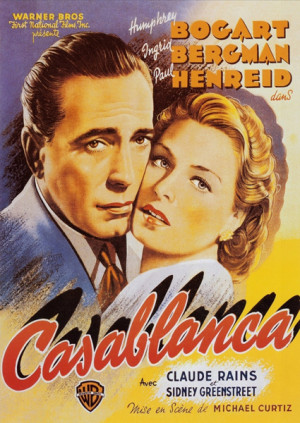

Top Peliculas
Para ver mas
a continuacion te mostraremos 2 de las mejores peliculas que hemos hemos encontrado, pero si estas peliculas no son sufucientes simpre puedes ver mas presionando el boton
ver masEl padrino (1972) de Francis Ford Coppola
Don Vito Corleone es el respetado y temido jefe de una de las cinco familias de la mafia de Nueva York en los años 40. El hombre tiene cuatro hijos: Connie, Sonny, Fredo y Michael, que no quiere saber nada de los negocios sucios de su padre. Cuando otro capo, Sollozzo, intenta asesinar a Corleone, empieza una cruenta lucha entre los distintos clanes
Rotten Tomatoes: 🍅 97% (críticos) | 🌕 98% (audiencia).
ver masCasablanca (1942)
Durante la II Guerra Mundial (1939-1945), Casablanca era una ciudad a la que llegaban huyendo del nazismo gentes de todas partes: llegar era fácil, pero salir era casi imposible, especialmente si el nombre del fugitivo figuraba en las listas de la Gestapo. En esta ocasión, el objetivo es Victor Laszlo, cuya única esperanza es Rick Blaine, propietario del 'Rick's Café' y antiguo amante de su mujer.
Rotten Tomatoes: 🍅 99% (críticos) | 🌕 95% (audiencia).
ver mas